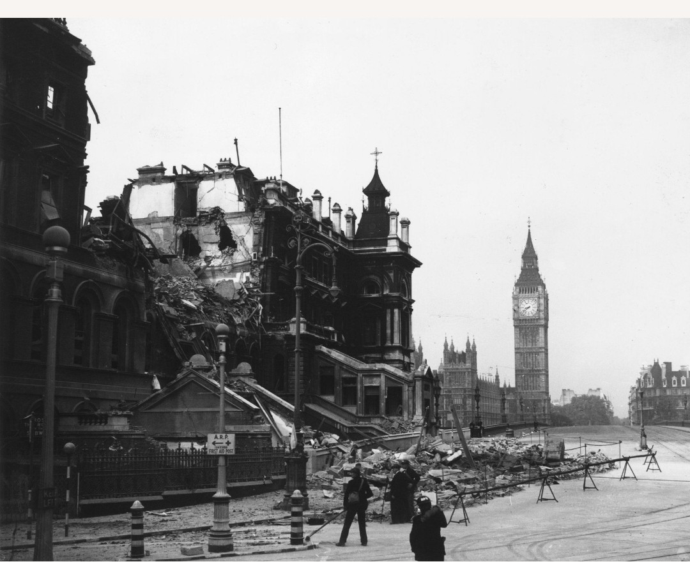

7 septembre 1940 – 11 mai 1941
Londres et plusieurs villes britanniques – Royaume-Uni
Axe : Allemagne – Luftwaffe (Heinkel He 111, Dornier Do 17, Junkers Ju 88).
Alliés : Royaume-Uni – Royal Air Force (RAF), défense civile, radars Chain Home.
Le Blitz est la campagne de bombardements stratégiques menée par l’Allemagne contre le Royaume-Uni. Londres est frappée nuit après nuit, visant à briser le moral britannique et à affaiblir l’industrie et les infrastructures du pays.
À partir du 7 septembre 1940, la Luftwaffe concentre ses attaques sur Londres. Les bombardements nocturnes deviennent quotidiens : docks, gares, quartiers résidentiels et bâtiments publics sont touchés. La population se réfugie dans les stations de métro, les abris Anderson et les caves.
Malgré les destructions massives, le Blitz échoue à briser la résistance britannique. La RAF maintient la supériorité aérienne et les radars permettent d’anticiper les raids. En mai 1941, l’Allemagne réduit ses bombardements pour se concentrer sur l’invasion de l’URSS.
Le Blitz devient un symbole de résilience. La population londonienne, malgré les pertes et les ruines, continue de vivre, travailler et soutenir l’effort de guerre. Cette résistance contribue à empêcher toute invasion allemande du Royaume-Uni.